Satellites
-
Fundamental research
- Astronomy, Astrophysics
- Geodesy, gravity field, geophysics, oceanography
- Climate, environment
-
Earth Observation
- Weather: Clouds, precipitation, radiation
- Sea level, surface temperature/color/contamination/...
- Sea Ice cover
- Geophysics/Geology, Topography, land surface
- Space weather, ionsphere, sun, magnetic field
-
Telecommunication
-
Navigation (inc. GNSS)
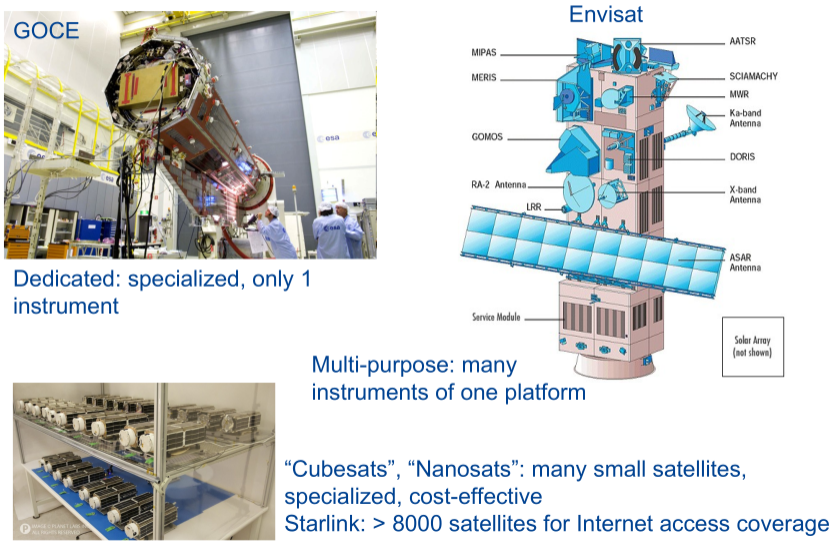
Orbits
\lim_{r\rightarrow\infty}\bm g=\frac{GM\bm r}{|\bm r|^3}r→∞limg=∣r∣3GMr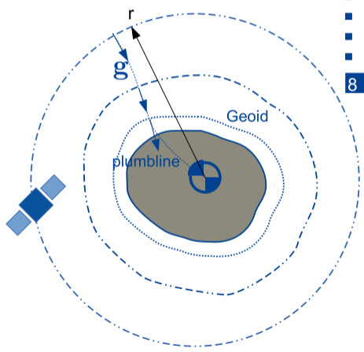
Orbital paths
- Increase horizontal velocity, V
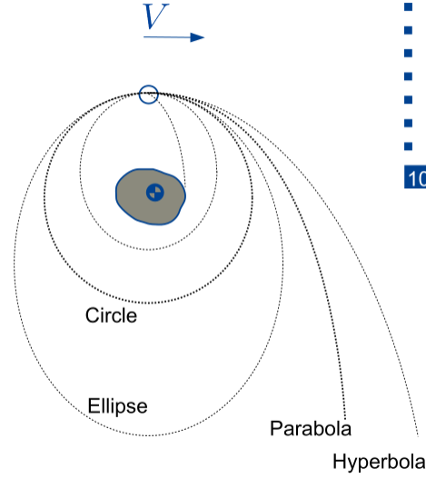
- Earth as a point mass
- -> Kepler orbit
- Kepler orbits are conical sections
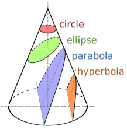
Kepler Orbits
- Assumption: Earth is a point mass
- Satellite trajectory (Position and Time)
- -> Kepler elements
- History:
- Tycho Brahe compiled comprehensive database of astronomical observations
- Johannes Kepler explained these with 3 laws of planetary motion (assistant and follow up of Bahe in Prague)
Kepler Laws
1st Law - Central body
- Orbits are ellipses with sun (central body) in one of the foci
2nd Law - Equal times, Equal areas
- During equal intervals of time, the connecting line between central body and planet/objects sweeps equal areas
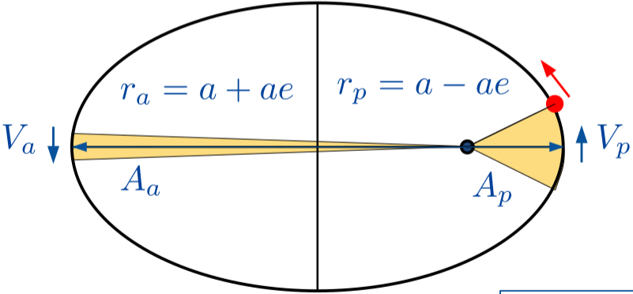
- p: perihelion/perigee
- a: aphelion/apogee
- Here:
V_a \leq V_p
Va≤Vp\bm x\times\bm v=\bm h = const
x×v=h=const
- Specific angular momentum is constant
- m\bm{\dot h}=M_{extern}=0mh˙=Mextern=0
- No external mass moments
- Areas remain constant in time
- Position vector and velocity vectors are perpendicular to \bm hh -> constant orbital plane
3rd Law - Orbital period
- Square of the orbital period is proportional to the cube of the semi major axis of the ellipse
T^2 = 4\pi ^2\frac{a^3}{GM}T2=4π2GMa3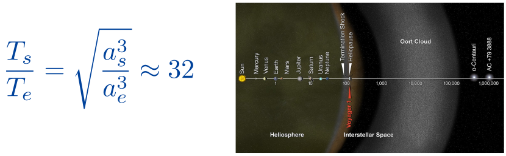
In Plane Kepler elements
- Describe size and shape of orbit (2 parameters) a,ea,e
- Set time of periapsis passing (1 parameter) \tauτ
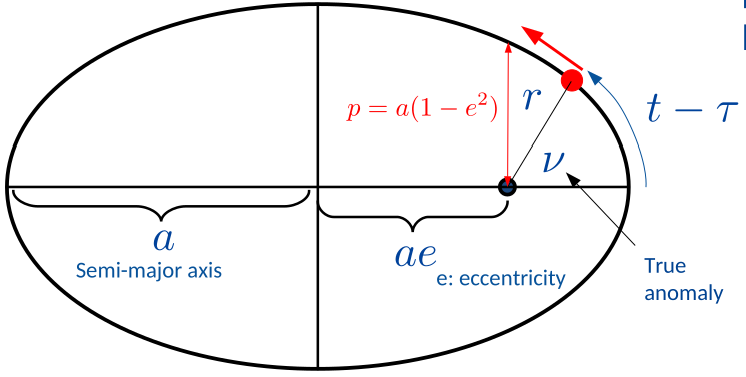
In Plane Geometry: Angular anomalies
\cos \nu = \frac{\cos E - e}{1-e\cos E}\quad or\quad \sin\nu = \frac{\sqrt{1-e^2}\sin E}{1- e\cos E}cosν=1−ecosEcosE−eorsinν=1−ecosE1−e2sinEt\rightarrow M \rightarrow E\rightarrow\nut→M→E→ν
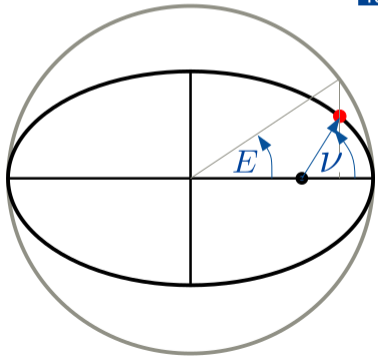
In plane orbital geometry: Position & Velocity
- \nuν - True anomaly
- EE Eccentric anomaly
- Mean anomaly MM
- p=a(1-e^2)p=a(1−e2)
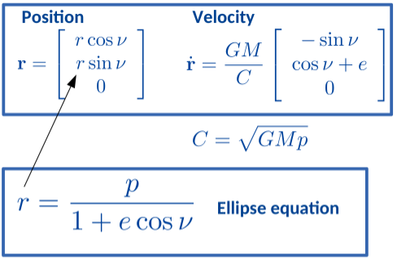
Solves in-plane problem:
e,a,t\rightarrow \nu \rightarrow \bm r, \bm {\dot r}e,a,t→ν→r,r˙
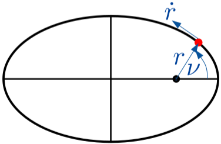
Ellipse in 3D -> 3 more Kepler parameters (angles) for rotation
Orientational Kepler elements
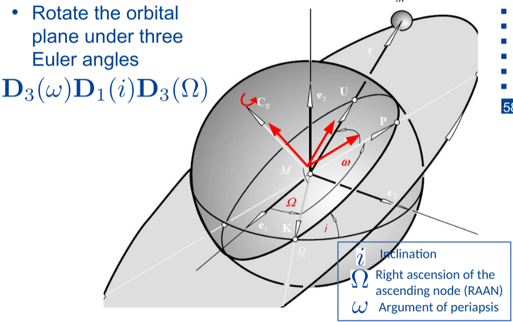
-
Fix shape, and orbital period
- aa Semi-Major Axis
- ee Eccentricity
-
Reference in time
- \tauτ Time of Periapsis passing
- Sometimes mean anomaly or true anomaly
-
Orient orbital plane in celestial reference system
- ii Inclination
- \OmegaΩ Right ascension of the ascending node (RAAN)
- \omegaω Argument of periapsis
-
Using 6 Kepler elements versus 6 cartesian components (position & velocity)
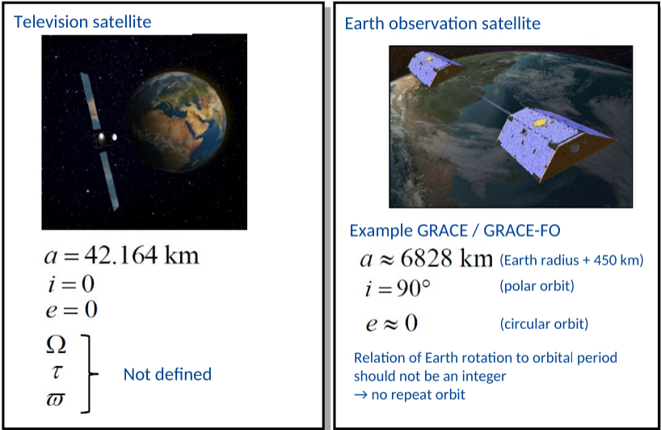
Orbital Energy
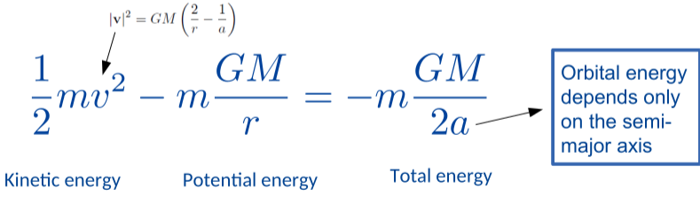
Orbital paths
-
Anomalies from perfect Kepler orbit contain gravity field information
-
Anomalies decreases for higher orbital altitudes
-
Largest gravity anomaly: Earth's flattening
-
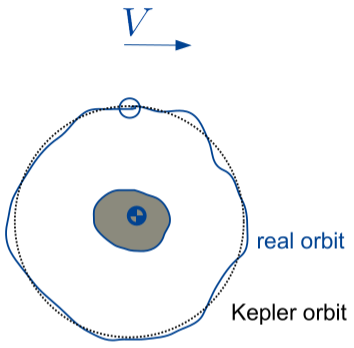
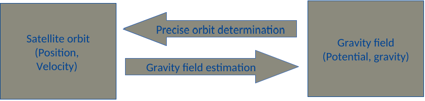
Orbital drift due to Earth's flattening
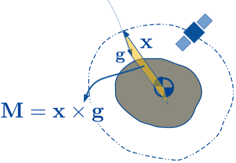
\bm h = \bm x\times \bm v\\
m\bm {\dot h}= \bm M_{extern}\neq 0h=x×vmh˙=Mextern=0
- Ellipsoidal bulge (J_2, C_{20}J2,C20) of Earth exerts a moment on the orbit
- h changes over time
- Drift of the orbital plane
Strength of effect & affected Kepler elements?
Osculating Orbit
- Idea: For every point tt, fit Kepler orbit through actual orbit
- The acceleration at any point in time is represented by the gravity induced by a point mass
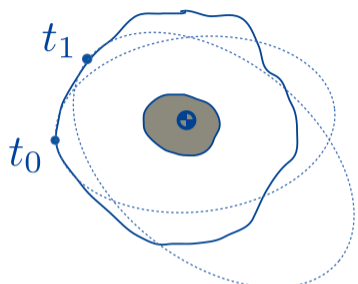
\bm x(t) = \bm{\tilde x}(\bm c(t), t)\\
\frac{d\bm x(t)}{dt} = \bm{\tilde v}(\bm c(t), t)\\
\frac{d^2\bm x}{dt^2}=-\frac{GM}{|\bm x| ^3}\bm x + \bm x(\bm x, \bm {\dot x}, t)x(t)=x~(c(t),t)dtdx(t)=v~(c(t),t)dt2d2x=−∣x∣3GMx+x(x,x˙,t)
-
Position and Velocity computed from Kepler orbit
-
But acceleration affected by perturbing forces as well
-
Needed: Vector of time/ variable Kepler elements c(t)
- (\bm c(t)=[a(t),e(t),…, \omega (t)]c(t)=[a(t),e(t),…,ω(t)])
-
After much math: (considering only gravity and linearisation)
-
Only consider effects which do not average out
-
Only use degree 2 order 0 term of gravity field
J_2 = -\sqrt 5 \ \overline C_{20}J2=−5 C20
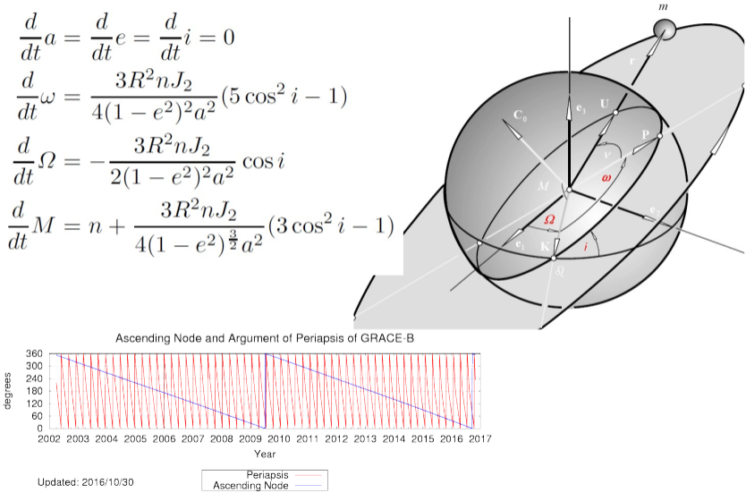
Special Orbit Types
- Some satellite orbit designs take advantage of flattening effect
- Sun-synchronous orbits
- Repeat orbit (radar altimetry)
Sun-Synchronous Orbits
- Orbital plane always same angle w.r.t. sun
- e.g. no eclipse, predictable lighting conditions
- \frac {d\Omega}{dt}=\frac{2\pi}{year}dtdΩ=year2π
- Satellite passes same latitude (ascending or descending) at the same local solar time
- i.e. same sun illumination angle
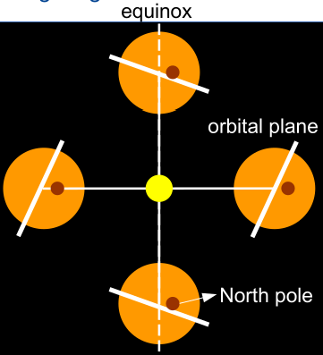
Repeat orbit
- Satellite repeats it's groundtrack pattern after certain repeat period
- A cyclecycle is one full completion of the repeat period
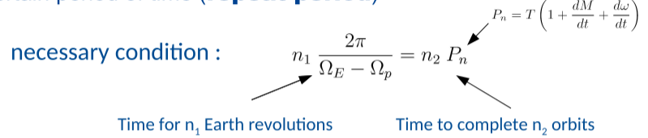
- P_n(\Omega_E-\Omega_p)=2\pi \frac{n_1}{n_2}Pn(ΩE−Ωp)=2πn2n1 "n_1n1-day repeat orbit"
- \frac{P_n}{P'_E}=\frac{n_1}{n_2}PE′Pn=n2n1 for sun-synchronous orbit (P_E'PE′ = 1 solar day)
Navigation Orbits
CHAMP High-Low Satellite tracking
- CHAMP: CHallenging Minisatellite Payload
- 2000-2010
- 450km altitude
- Precise Orbit determination with GPS
- Correction for suface forces (drag, solar radiation pressure) with accelerometer
- Applications: static gravity field, magnetic field, GPS occultation
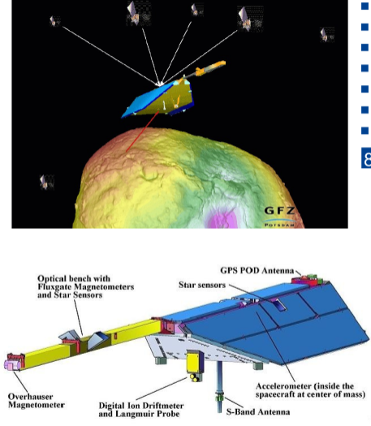
GOCE Gradiometry
- Very low altitude (~250 km)
- 2009-2013
- Gradiometer (3\times 23×2 proofmasses)
- Compensation of drag by Ion propulsioin
- High resolution static gravity field, ocean currents
GRACE Low-Low Gravimetry
-
Separation ~220km
-
2002-2007
-
Inter-satellite Tracking Instrument
- (~5 \mu m/sμm/s in K-band)
-
Accelerometer (Surface forces)
-
Time-variable gravity field (e.g. Greenland mass loss)
Summary
-
For a 2 body problem
- Central body is point mass
- Orbit is an ellipse (Kepler orbit)
- Orbits are ellipses, with sun (central body) in one of the 2 foci
- During equal intervals of time, the connecting line between central body and planet (object) sweeps equal areas
- Square of orbital period is proportional to cube of the semi major axis of the ellipse
-
Disturbing forces perturb orbit
- Equatorial bulge of the Earth exerts a moment on the orbit causing it to change orientation in space
-
Special orbits, sun synchronous, repeat orbits